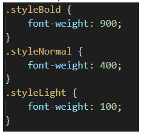
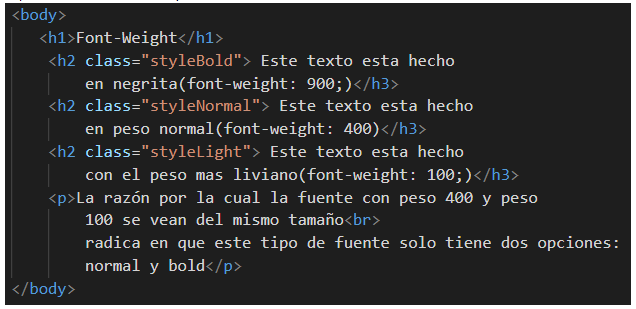

- Inicio
- 1. Estructura Básica
- 2. Meta UTF-8
- 3. Párrafos y Encabezados
- 4. Lorem -Texto de Relleno
- 5. Link a CSS
- 6. Clases
- 7. Selectores
Font - Weight
Para cambiar el texto de una fuente, se puede directamente desde el archivo .html utilizando la etiqueta <b> o <strong>, o desde el archivo .css utilizando la sintaxis font-weight:
Archivo css
Archivo HTML
Página Web